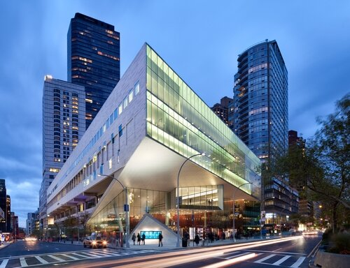
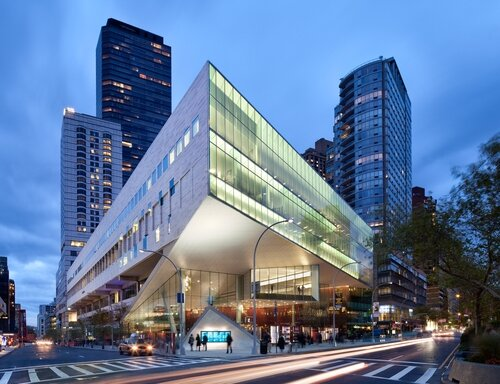

Important Places:
 

General NYC Music Timeline:
1920s: Harlem Renaissance including blues, jazz, home of bebop and swing (1930s & 40s)
1950s & 60s: Rock and roll
1970s: Disco, famous disco club Studio 54, house music evolved from it, hip-hop became popular during this time–NYC’s Afrika Bambaataa organized block parties in the Bronx during the late 1970s and became known as the “Godfather”
1980s and 90s: Notorious B.I.G, Tupac
2000s: 50 Cent, Niki Minaj, A$AP Rocky, French Montant, Jay-Z, A Boogie wit da Hoodie, Cardi B, Lil Tjay, Mary J. Blige
Specific Important Dates for Black Popular Music in NYC:
1934: The Apollo Theater opens and becomes a cultural and musical mecca in the heart of the Harlem
neighborhood in NYC
1955: Marian Anderson is the first black singer to perform with the New York Metropolitan Opera
1963: James Brown’s Live At the Apollo (recorded at the Harlem landmark on October 24, 1962) is released
in
May and is a crossover smash, reaching No. 2 on the Billboard album chart (and lodging on said chart for
66
weeks). In the One: The Life and Music of James Brown, RJ Smith noted that the record was “so
staggeringly
new it scarcely bore any connection to the music called rhythm and blues. Here was the new soul of the
music.” After the success of the album, Brown said, “I started seeing different things and my brain
started
to intercept new ideas. I became a big city thinker.”
Relation to Economic Inequality:
Through these times, economic inequality has been a centralized theme within communities in New York. Today, approximately one in every five New Yorkers lives in poverty and nearly half the city’s households are considered poor. Additionally, the average income for white families in New York state was $122,000 during the 2014-15 period, 77 percent greater than the average family income for blacks ($69,100) and 93 percent greater than the average for Latino families ($63,500). Because of this, the higher average incomes for whites means that white families account for nearly 71 percent of all family income in the state, while they represent only 60 percent of all families. Blacks and Latinos have smaller income shares than their share of families, and 63 percent of these black families are in the bottom half of the income distribution, while 70 percent of Latino families are in the bottom half.
While these statistics show economic inequality within New York as it is today, these trends aren’t new. Financially, New York has been racially divided for decades, and this division has presented itself through music through these decades.
Song Examples:
BLACK MUSIC HISTORY: YEARS OF MUSICAL DEVELOPMENT
The History of Popular Music in New York City
Celebrating Culture: Honoring Black Music
How music has responded to a decade of economic inequality
Carnegie Hall Image
Metropolitan Opera House Image
Apollo Theater Image
Juliard School Image